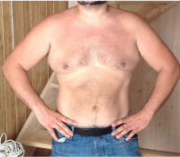
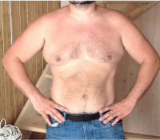

Heimtückische Kohlenhydrate: Warum werden wir so dick?


Die überschüssigen Kilos sind hinderlich in deinem Leben, aber du kannst nicht abnehmen. Nach dem Mittagessen hast du wieder Hunger, Sport bringt nichts. Sehr wahrscheinlich leidest du an dem metabolischen Syndrom (reduzierte Insulin Anfälligkeit), deine Ernährung ist reichhaltig an Kohlenhydraten, und die moderne Keto Diät ist genau das, was du jetzt brauchst! Was ist diese Diät und wie kann man es schaffen, sein Normalgewicht zu erreichen, und nicht mehr zuzunehmen? Unsere Ernährungsexpertin Maria Eisner liefert uns Antworten

Übergewicht, auf das man keinen Einfluss mehr hat, ist das erste Anzeichen für ein metabolisches Syndrom. In diesem Zustand ist der Körper weniger anfällig für Insulin, das wichtigste Hormon, dass zuständig ist für den Stoffwechsel von Fett. Es wird sehr viel Insulin produziert, sodass der Körper nicht mehr in der Lage ist, das gespeicherte Fett zu verbrennen.
98% der Diäten helfen bei einem metabolischen Syndrom nicht. Ebenso körperliche Anstrengung. Man entspannt einfach ein bisschen, nimmt sich noch einen Nachschlag des Nachtisches und nimmt weiterhin zu.

Warum ist dem so?
Grund 1 - zu viele Kohlenhydrate durch die Ernährung. Man muss nicht Mengen an Süßigkeiten und Kuchen verschlingen, um zuzunehmen, meist ist bereits ein kleines Stück Schokolade über dem Normwert ausreichend, um diesen Prozess anzuregen. Daher ist keiner geschützt vor dem metabolischen Syndrom. Sogar Mädchen, die "so viel essen können, wie sie wollen, aber nicht zunehmen" kann dies betreffen.
Daher ist die einzige Lösung für das metabolische Syndrom eine vollständige oder partielle Absetzung von Kohlenhydraten.
Darum geht es bei der Keto Diät. Sie ist gut, weil es nicht möglich ist, bei dieser Diät Hunger zu entwickeln. Auch wenn Kohlenhydrate untersagt sind, können Fette und Proteine reichlich zu sich genommen werden.
- Fleisch
- Fisch
- Hüttenkäse
- Eier
- Käse
- Nüsse
- Gemüse
- Gemüseöle
- Müsli
- Früchte
- Backwaren
- Zucker
- Nudeln
- Kartoffeln
- Honig
- Schokolade
- Säfte, Soft Drinks
- Alkohol
- Lebensmittel mit Transfetten (Margarine, Mayonnaise, etc.)
Das Ziel 98% aller Diäten ist es, die Aufnahme an Kalorien zu reduzieren, sowie die chemischen Zusammensetzungen von Lebensmitteln auszuschließen und deren Nährwerte. Deshalb können diese Diäten überschüssiges Wasser beseitigen und einen vorübergehenden Gewichtsverlust von 2-3 Kilo bewirken.
Nur die Keto Diät bekämpft die Ursache von Übergewicht - ein metabolischer Fehler, der von einem Überschuss an Kohlenhydraten verursacht wird.
Wenn es dem Körper an Kohlenhydraten fehlt, begibt er sich in einen speziellen Zustand, in dem der Körper seine Energie nicht aus Lebensmitteln zieht, sondern aus den Fettreserven. Daher kann der Körper in diesem Zustand aktiv an Gewicht verlieren. Die wichtigste Energiequelle sind Ketonkörper: Substanzen, die in der Leber durch konsumierte Fette und "Fettansammlungen" an Hüften und Taille gebildet werden. Ketonkörper versorgen Innenorgane, Muskeln und das Gehirn anstatt des üblichen Zuckers oder anderen Kohlenhydraten.
Das Herzstück von Keto Bullet - Instantkaffee, Chicorée und Kokosnussbrei. Um die Ketose und den Gewichtsverlust so schnell wie möglich zu bewirken, ist das Getränk angereichert mit Chrom Picolinate (beliebter und bekannter Fettverbrenner) sowie ketogenes MCT Öl.
Mit Keto Bullet wird das Kohlenhydrate Level zusammen mit dem Appetit gesenkt. Und wenn dir nicht nach Essen ist (sogar der saftige Kuchen nicht!), dann setzt die Ketose noch schneller ein, und das Fett an Taille und Hüfte wird vor deinen Augen verschwinden. All das - ganz ohne der Gesundheit zu schaden!
Mit Keto Bullet , erreicht der Körper die Ketose in 2-4 Tagen. Sogar, wenn dein Keto Speiseplan nicht zu strikt ist und du es dir leisten kannst, dir zwischendurch eine Brötchen oder einen Fruchtsnack zu gönnen.
Verleiht dem Getränk einen hervorragenden Geschmack und ein tolles Aroma, versorgt den Körper mit Energie und Tatkraft für den ganzen Tag
Unterdrückt das Hungergefühl, reduziert den Appetit, befreit den Körper von Giftstoffen und normalisiert den Blutzuckerhaushalt.

Verhilft dir dabei, die Ketose schneller zu erreichen, versorgt den Körper mit zusätzlicher Energie, verbessert Erinnerungsvermögen, Konzentration und Leistungsfähigkeit

Füllt den Vitaminhaushalt wieder auf mit wertvollen Mikronährstoffen
Beschleunigt die Verbrennung von Kalorien, unterstützt den Gewichtsverlust, reduziert Körperfett und unterdrückt den Heißhunger auf Süßes und Zucker
Innerhalb von 2-3 Tagen täglicher Einnahme von Keto Bullet Sinkt der Insulinspiegel auf den Normalstand, ist der Stoffwechsel wieder hergestellt und das metabolische Syndrom abgeklungen. Nach 2-3 Wochen pegelt sich das Gewicht wieder ein, der Bauch wird schmaler, die Hüften, der Hintern dünner und straffer.
Sobald Keto Bullet zum Verkauf angeboten wurde, haben sich meine Kunden, die an einem metabolischen Syndrom leiden, sofort verliebt


Ich habe Neuroleptika genommen und der Insulinspiegel schoss in die Höhe und so habe ich 40 kg in weniger als einem Jahr zugenommen. Ich wurde faul, habe mich gehen lassen, der Bauch wurde immer dicker. Ich wollte nur noch essen, konnte mich nicht zurückhalten und habe die Hamburger sogar Nachts verschlungen.
Dann habe ich eingesehen, dass es so nicht weitergehen kann. Ich habe mich mit einem Ernährungsexperten getroffen. Dort wurde mir eine Ketose Diät empfohlen und zusätzlich, damit ich nicht zusammenbreche - dieses Getränk.
Man muss es jeden Tag trinken, 1 Glas pro Tag. Einfach nur in heißes Wasser einrühren und den Kaffee damit ersetzen. Ich trinke es jetzt seit 3 Monaten und siehe da - 30 kg sind weg! Ich werde weitermachen, bis ich auf 75 kg runter bin.


Den Höhepunkt habe ich schon überwunden, aber die Probleme bleiben. Alles schwabbelt an Hüfte und Schultern.
Ich habe mich für eine Keto Diät entschieden. Aber es ist hart, "trocken" zu bleiben: die Seele fordert den Zucker ein! In einem Keto Forum hat man mir Keto Bullet empfohlen - ein Getränk, das den Insulinhaushalt reguliert und den Appetit zügelt. In weniger als einem Monat habe ich 20 kg abgenommen. 15 cm weniger an der Taille - so als wäre nie etwas gewesen!
Ich bin immer noch auf Keto, habe weitergemacht. Ich sehne mich gar nicht nach verbotenen Früchten: dank Keto Bullet ernährt man sich wie ein Vogel!

Ich habe Beschwerden (Bluthochdruck, metabolische Probleme, Insulinspitzen) und das Gewicht ging rauf. Im Januar wog ich 107 kg bei einer Größe von 1,60 cm.
Jetzt habe ich die Kohlenhydrate eingeschränkt und um abzunehmen trinke ich Keto Bullet . Es ist gut verträglich mit meinen Medikamenten und bringt echt tolle Ergebnisse! In drei Monate bin ich schlanker geworden, als ich jemals war! 35 kg sind weg!
Keto Bullet wird noch nicht im Einzelhandel verkauft. Sie können es nur auf der Website des Herstellers kaufen.
Übrigens habe ich ein Geschenk für alle Abonnenten. 50% Rabatt auf Keto Bullet von dieser Seite. Wenn Sie schon lange abnehmen möchten und es nie geklappt hat und selbst Diäten zu schwierig für Sie sind, haben Sie nun die Chance, Ihren Körper und Ihre Gesundheit zu fördern.
Beeilen Sie sich!


 



Neueste Artikel zu diesem Thema